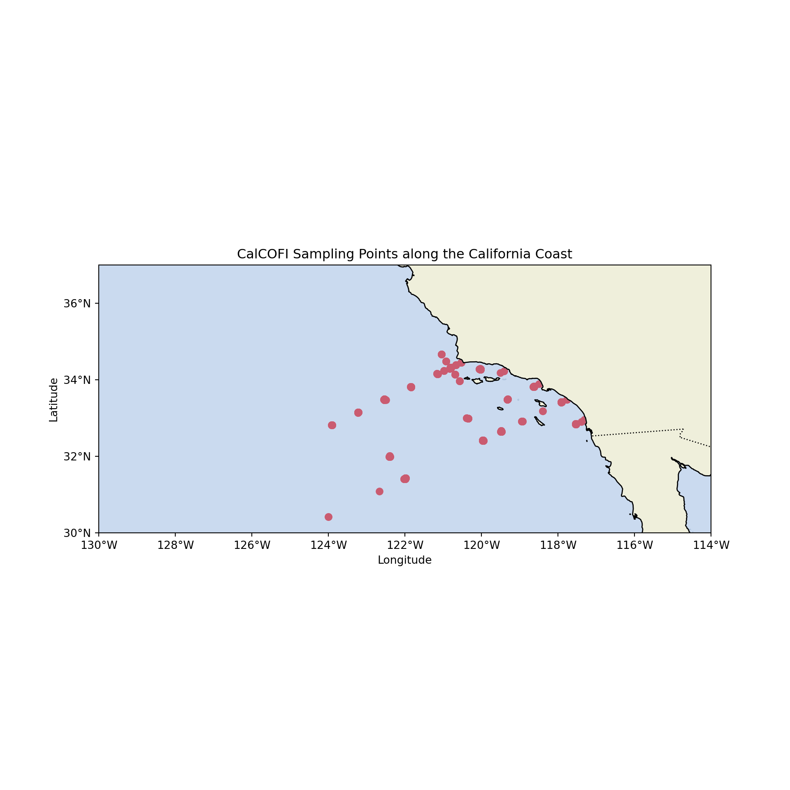
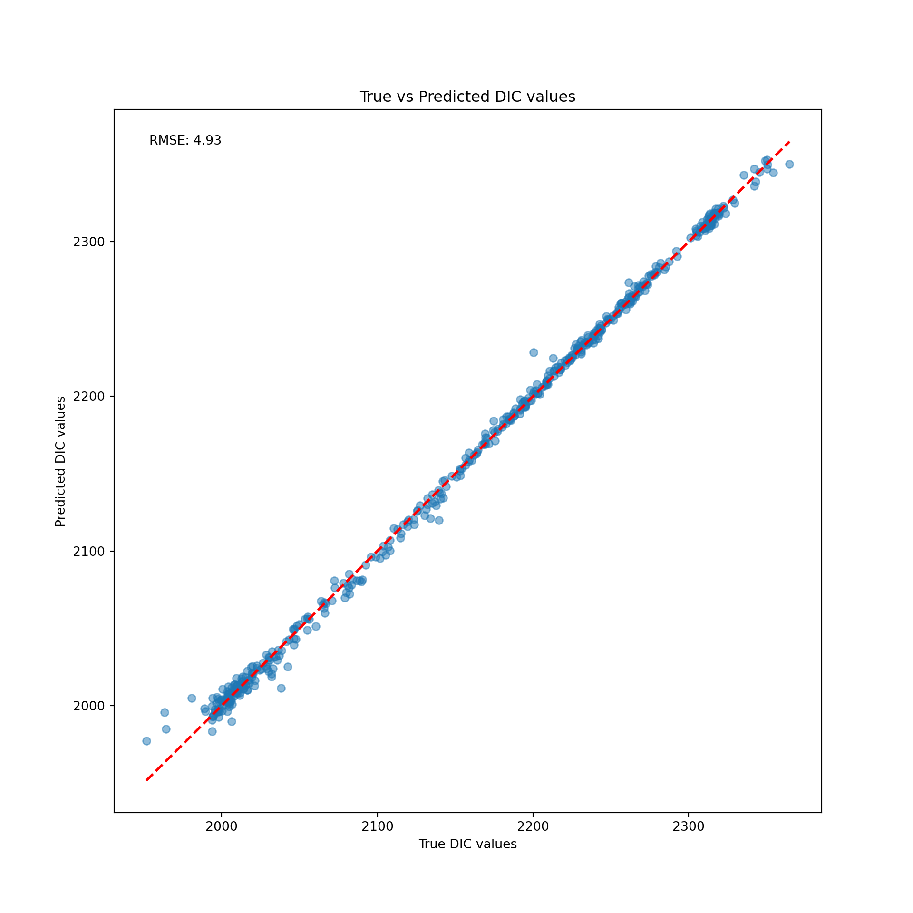
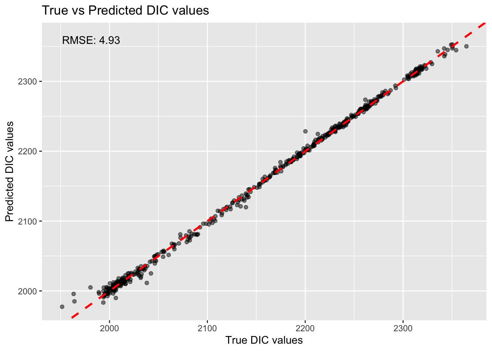
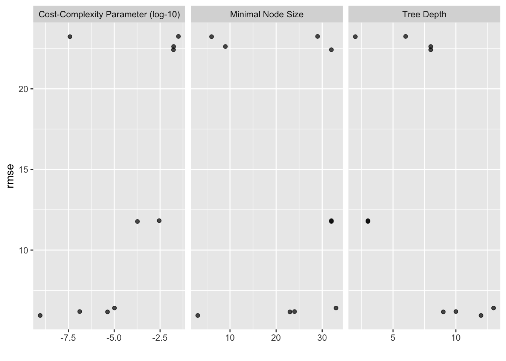
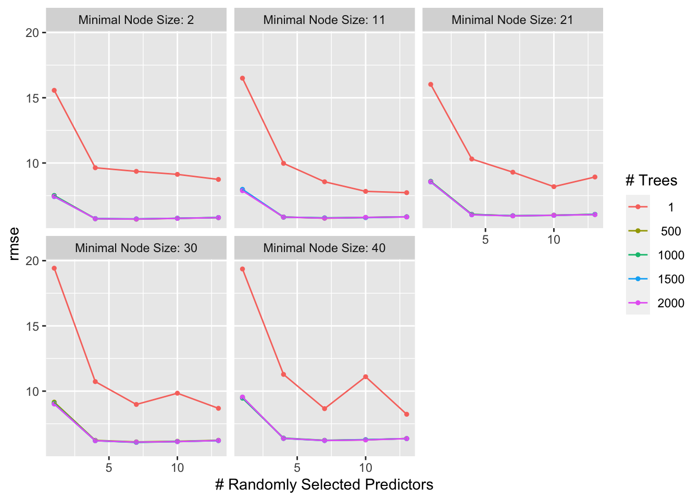

library(tidyverse)
library(tidymodels)
library(gridExtra)
library(doParallel)
library(rsample)
library(glmnet)
library(tmap)
library(sf)
library(leaflet)
library(reticulate)
library(baguette)
use_condaenv("oceanchem", required = TRUE)Predicting dissolved inorganic carbon (DIC) concentrations using different algorithms in Python and R
R
Python
ML
Projects
We will use ocean chemistry data collected by CalCOFI to predict DIC using Linear Regression, KNN, Decision Trees, Random Forest Regressor, Gradient Boosting, and a Support Vector Machine.
Introduction and Background
In this post we will be using chemistry data from seawater collected by the California Cooperative Oceanic Fisheries Investigation (CalCOFI). We will be using temperature, salinity, pH, and other chemical parameters to predict Dissolved Inorganic Carbon (DIC) concentrations. Samples are collected at CalCOFI sampling stations. We will be using different regression models to find which does the best job at predicting DIC. Our models are as follows: Linear Regression (including Ridge and Lasso penalties), K-Nearest Neighbors, Decision Trees, Bagged Decision Trees, Random Forests, Gradient Boosting, and a Support Vector Machine. We will be building each of these models in both Python and R using sklearn and tidymodels, and we will discuss how each of these models work. This is an expansion on an assignment from Machine Learning for Environmental Science as part of the University of California Santa Barbara’s Bren School of the Environment & Management Master of Environmental Data Science (MEDS) Program.
The full list of our predictors are below:
NO2uM - Micromoles of Nitrite per liter of seawater
NO3uM - Micromoles of Nitrate per liter of seawater
NH3uM - Micromoles of Ammonia per liter of seawater
R_TEMP - Reported (Potential) Temperature Celsius
R_Depth - Reported Depth (from pressure, meters)
R_Sal - Reported Salinity (from Specific Volume Anomoly, M³/Kg)
R_DYNHT - Reported Dynamic Height in units of dynamic meters (work per unit mass)
R_Nuts - Reported Ammonium concentration
R_Oxy_micromol.Kg - Reported Oxygen concentration micromoles/kilogram
PO4uM - Micromoles of Phosphate per liter of seawater
SiO3uM - Micromoles of Silicate per liter of seawater
TA1 - Total Alkalinity micromoles per kilogram solution
Salinity1 - Salinity (Practical Scale - 1978)
Temperature_degC - Temp (C)
First, we import our required libraries in both languages. We use the reticulate package in R to allow us to execute python code in a quarto doc.
import pandas as pd
import numpy as np
import xgboost
import sklearn
from sklearn.model_selection import train_test_split, StratifiedKFold, GridSearchCV
from sklearn.linear_model import LinearRegression, Ridge, Lasso
from sklearn.metrics import mean_squared_error
from mpl_toolkits.axes_grid1 import make_axes_locatable
from cartopy.mpl.ticker import LongitudeFormatter, LatitudeFormatter
import seaborn as sns
import matplotlib.pyplot as plt
import cartopy.crs as ccrs
import cartopy.feature as cfeature
import plotlyPreprocessing
First, we are going to do some pre-processing and data exploration. The process is essentially the same in both R and python. We first import the data, and make sure our columns are consistent. The actual DIC values for our test set are stored in a separate dataframe, so we’ll also join these onto the test set.
# Reading in the data using pandas. Join the solutions onto the test set
train_py = pd.read_csv("train.csv")
sols = pd.read_csv("solution.csv")
test_py = pd.read_csv("test.csv")
test_py = pd.merge(test_py, sols, on="id", suffixes=("", "_actual"))
# Dropping the initial index column, renaming TA1 to a more appropriate format
test_py = test_py.drop(test_py.columns[0], axis=1).rename(columns={"TA1.x": "TA1.x"})
train_py = train_py.drop([train_py.columns[0], train_py.columns[12]], axis=1).rename(columns={"TA1.x": "TA1"})
# We will be clearing our environment consistently using the del function in python, just to stay organized and clear up space
del(sols)Lets plot the data to get a feel for where off the California coast the samples were collected. We’re going to use the cartopy package:
# First, we set up the plot with cartopy
fig = plt.figure(figsize=(10, 10))
ax = fig.add_subplot(1, 1, 1, projection=ccrs.PlateCarree()) # specifying the map projection we want to use
# Next, we'll define the region of interest (California coast)
lat_min, lat_max = 30, 37
lon_min, lon_max = -130, -114
# Set the plot extent (latitude and longitude range of the coast)
ax.set_extent([lon_min, lon_max, lat_min, lat_max])
# Add higher resolution coastlines, land, and ocean features for aesthetics
ax.add_feature(cfeature.NaturalEarthFeature('physical', 'land', '10m', edgecolor='face', facecolor=cfeature.COLORS['land']))
ax.add_feature(cfeature.NaturalEarthFeature('physical', 'ocean', '10m', edgecolor='face', facecolor=cfeature.COLORS['water'], alpha = 0.5))
ax.coastlines(resolution='10m')
# Add the borders of the coastline
ax.add_feature(cfeature.BORDERS, linestyle=':')
# Plot the sampling points
ax.scatter(train_py['Lon_Dec'], train_py['Lat_Dec'], color='red', marker='o')
# Add labels and title
ax.set_xticks(np.arange(lon_min, lon_max + 1, 2), crs=ccrs.PlateCarree())
ax.set_yticks(np.arange(lat_min, lat_max + 1, 2), crs=ccrs.PlateCarree())
ax.xaxis.set_major_formatter(LongitudeFormatter())
ax.yaxis.set_major_formatter(LatitudeFormatter())
plt.xlabel("Longitude")
plt.ylabel("Latitude")
plt.title("CalCOFI Sampling Points along the California Coast")
plt.show()
We read in the data the same way in R. We use an inner_join to bind the test values to the dataframe, and filter out the columns that we’re not interested in.
# Read in the solutions data
solutions <- read_csv("solution.csv")
# Read in the testing data, join it to our solutions dataframe.
testing <- read_csv("test.csv") |> inner_join(solutions, by = "id", suffix = c("", "_actual")) |> select(-1, TA1.x = TA1)
# Read in the training data, getting rid of the redundant id column and the other blank column
training <- read_csv("train.csv") |> select(-1, -...13)
# Using doParallel to specify the number of cores that we want to use for some of our more computationally intensive models. We'll come back to this later
n_cores <- detectCores() - 1
# Clearing our environment
rm(solutions)We can also plot the data in R, instead using leaflet to add some basic interactivity.
# Create a color palette for DIC. This adds another dimension to the data, and we'll be able to clearly see if there is any sort of spatial pattern with DIC
color_palette <- colorNumeric(palette = "YlOrRd", domain = training$DIC)
# Create the leaflet map
leaflet(training) %>%
addProviderTiles("Esri.WorldImagery", group = "Satellite") %>%
addProviderTiles("OpenStreetMap", group = "Street Map") %>%
addCircleMarkers(lng = ~Lon_Dec, lat = ~Lat_Dec,
fillColor = ~color_palette(DIC),
fillOpacity = 1, stroke = FALSE,
radius = 3, group = "Data") %>%
addLegend(pal = color_palette, values = ~DIC,
title = "DIC", position = "bottomright") %>%
addLayersControl(baseGroups = c("Satellite", "Street Map"),
overlayGroups = "Data",
options = layersControlOptions(collapsed = FALSE))rm(color_palette)This was partially an exercise to see if DIC was correlated with distance from the coastline at all, which it doesn’t appear to be.
Feature Engineering
Now we’re going to do some feature engineering. Feature engineering transforms existing data into new data, and helps improve our model performance by capturing relationships that might not be explicit in the data as it is. There are different types of feature engineering, but we’re going to focus on using interaction terms. Interaction terms are used to capture the combined effect of two or more variables on our target variable, DIC. This is particularly important in our context because ocean chemistry is complicated, and we would like to use our domain knowledge to capture some of the relationships between our predictors.
For example, consider the relationship between depth R_Depth and salinity R_Sal. The interaction between depth and salinity can be explained by the fact that as water depth increases, pressure also increases, which affects the solubility of gases in seawater. Salinity also affects the solubility of gases in seawater, so the combined effect of depth and salinity may impact dissolved inorganic carbon levels.
Using this same approach, we are going to include interaction terms for temperature/salinity, and depth/temperature.
In Python, we name the new interaction column and set it equal to the product of the terms we want to interact. We repeat this process for each interaction term.
# Adding interaction terms to our training set
train_py['T_degC_Salnty'] = train_py['Temperature_degC'] * train_py['Salinity1']
train_py['Depth_Sal'] = train_py['R_Depth'] * train_py['R_Sal']
train_py['Depth_Temp'] = train_py['R_Depth'] * train_py['Temperature_degC']
# Same thing for the test set
test_py['T_degC_Salnty'] = test_py['Temperature_degC'] * test_py['Salinity1']
test_py['Depth_Sal'] = test_py['R_Depth'] * test_py['R_Sal']
test_py['Depth_Temp'] = test_py['R_Depth'] * test_py['Temperature_degC']We then make our training and testing objects. We split off DIC and assign it to the y_test and y_train variables below. This allows us to explicitly tell our models which columns we’re using as features, and the outcome we want to predict.
# Splitting off DIC in the training data
X_train = train_py.drop(columns=['DIC'])
y_train = train_py['DIC']
# Same thing for the test data
X_test = test_py.drop(columns=['DIC'])
y_test = test_py['DIC']We can use the same approach to make our interaction terms in R with the $ operator to initialize new columns:
# Adding interaction terms to our training sets
training$T_degC_Salnty <- training$Temperature_degC * training$Salinity1
training$Depth_Sal <- training$R_Depth * training$R_Sal
training$Depth_Temp <- training$R_Depth * training$Temperature_degC
# Adding interaction terms to our test sets
testing$T_degC_Salnty <- testing$Temperature_degC * testing$Salinity1
testing$Depth_Sal <- testing$R_Depth * testing$R_Sal
testing$Depth_Temp <- testing$R_Depth * testing$Temperature_degCIn R, the tidymodels package provides us with useful functions for splitting training and testing data. We stratify on DIC to ensure that our data is not disproportionately split on the outcome variable, which would bias our model. We also specify our cross-validation parameters using 5 folds, and create a recipe object that we will use throughout our analysis. This recipe object uses our specifications to normalize the numeric variables, and we will use this in each R model. We will also normalize in Python, using pipelines that we create separately for each model.
# Creating 5-fold CV
folds <- vfold_cv(data = training, v = 5, strata = DIC)
# Creating our recipe object
rec <- recipe(DIC ~ ., data = training) |>
step_normalize(all_numeric(), -DIC) |>
prep() Linear Regression
Linear regression is the simplest model we can use to make predictions. It is an extremely powerful yet simple technique used to model the relationship between one or more independent variables (predictors) and dependent variables (features). The basic form of the model is:
\[\operatorname{Y}=\beta_0+\beta_1 x +\beta_n x_n + \varepsilon \] Where \(\beta_0\) is our intercept, \(\beta_1\), \(\beta_n\) are the coefficients of our independent variables, and \(\varepsilon\) is the difference between the observed values and the values predicted by our model. We’re going to be evaluating our model performance using the Root Mean Squared Error (RMSE) metric which represents the square root of the average squared differences between the predicted values and the actual observed values. This helps to quantify the difference between the predicted values generated by the model and the actual values of the target variable.
We’re also going to try Lasso and Ridge regression here. Both of these follow the same concepts as regular linear regression, but they implement penalties based on slightly different metrics of the cost function. Ridge regression adds an L2 penalty term, which is the squared magnitude of the \(\beta\) coefficients. This penalty term is controlled by alpha, and prevents our model from overfitting the training data by shrinking the coefficients towards zero, thus reducing the variance of the model. Lasso on the other hand uses an L1 penalty term on the cost function, which is based on the absolute magnitude of the coefficients. This penalty term is controlled by lambda, and forces some of the coefficients to be exactly zero, eliminating irrelevant features from the model. Both of these may improve our models’ performance.
In Python, we first instantiate a linear regression model, fit it on the training data, and then predict on the holdout data.
# instantiate a Linear Regression model
lr_model = LinearRegression()
# fit the model to the training set
lr_model.fit(X_train, y_train)
# Predict on the test setLinearRegression()In a Jupyter environment, please rerun this cell to show the HTML representation or trust the notebook.
On GitHub, the HTML representation is unable to render, please try loading this page with nbviewer.org.
LinearRegression()
y_test_pred_lr = lr_model.predict(X_test)
# Calculate RMSE on our test set
rmse_test_lr = mean_squared_error(y_test, y_test_pred_lr, squared=False)
print(f"RMSE on the test set: {rmse_test_lr:.2f}")RMSE on the test set: 4.93An RMSE of 4.93 is not bad at all! Lets take a look at what this actually looks like plotted through our data:
# clear our plot
plt.clf()
# Create a scatter plot of the true DIC values vs predicted DIC values
plt.scatter(y_test, y_test_pred_lr, alpha=0.5)
# Add a diagonal line representing perfect predictions
diagonal_line = np.linspace(min(y_test.min(), y_test_pred_lr.min()),
max(y_test.max(), y_test_pred_lr.max()))
plt.plot(diagonal_line, diagonal_line, color='red', linestyle='--', lw=2)
# Add labels, title and RMSE text
plt.xlabel('True DIC values')
plt.ylabel('Predicted DIC values')
plt.title('True vs Predicted DIC values')
plt.text(0.05, 0.95, f'RMSE: {rmse_test_lr:.2f}', transform=plt.gca().transAxes)
# Show the plot
plt.show()
del(lr_model, y_test_pred_lr)Now we’ll check out Ridge and Lasso regression. We follow the same approach as with linear regression but with one slight change. We specify the alpha parameter, which controls the strength of the penalty. Usually this would be
plt.clf()
# Ridge Regression
ridge = Ridge(alpha=1)
ridge.fit(X_train, y_train)Ridge(alpha=1)In a Jupyter environment, please rerun this cell to show the HTML representation or trust the notebook.
On GitHub, the HTML representation is unable to render, please try loading this page with nbviewer.org.
Ridge(alpha=1)
ridge_preds = ridge.predict(X_test)
ridge_rmse = mean_squared_error(y_test, ridge_preds, squared=False)
print("Ridge RMSE:", ridge_rmse)
# Lasso RegressionRidge RMSE: 4.928343737671815lasso = Lasso(alpha=1)
lasso.fit(X_train, y_train)Lasso(alpha=1)In a Jupyter environment, please rerun this cell to show the HTML representation or trust the notebook.
On GitHub, the HTML representation is unable to render, please try loading this page with nbviewer.org.
Lasso(alpha=1)
lasso_preds = lasso.predict(X_test)
lasso_rmse = mean_squared_error(y_test, lasso_preds, squared=False)
print("Lasso RMSE:", lasso_rmse)Lasso RMSE: 6.5330738340489605del(ridge, ridge_preds, lasso, lasso_preds)We use our recipe that we defined earlier, then create a linear regression model and a workflow. We add our recipe and model to our workflow, fit on the training data, and predict on the validation/holdout data.
# Create a linear regression model
lm_model <- linear_reg() %>%
set_engine("lm") %>%
set_mode("regression")
# Create a workflow with the recipe and the model
lm_workflow <- workflow() |>
add_recipe(rec) |>
add_model(lm_model)
# Fit the model to the training data
lm_fit <- fit(lm_workflow, data = training)
# Make predictions on the validation data
testing_preds_lr <- predict(lm_fit, testing)
# Calculate the RMSE
rmse_test_lr <- rmse(testing_preds_lr, truth = testing$DIC, estimate = .pred)
# Extract the RMSE value
rmse_lr <- rmse_test_lr$.estimate
print(paste0("RMSE on the holdout set: ", round(rmse_lr, 3)))[1] "RMSE on the holdout set: 4.933"# Create a scatter plot of the true DIC values vs predicted DIC values
ggplot(testing, aes(x = DIC, y = testing_preds_lr$.pred)) +
geom_point(alpha = 0.5) +
geom_abline(slope = 1, intercept = 0, color = "red", linetype = "dashed", size = 1) +
labs(
x = "True DIC values",
y = "Predicted DIC values",
title = "True vs Predicted DIC values"
) +
annotate("text", x = min(testing$DIC), y = max(testing$DIC), label = paste("RMSE:", round(rmse_lr, 2)), hjust = 0, vjust = 1)
rm(lm_model, lm_workflow, lm_fit, testing_preds_lr, rmse_test_lr)# Ridge Regression
ridge_model <- linear_reg(penalty = 1, mixture = 0) %>%
set_engine("glmnet") %>%
set_mode("regression")
ridge_workflow <- workflow() |>
add_recipe(rec) |>
add_model(ridge_model)
ridge_fit <- fit(ridge_workflow, data = training)
ridge_testing_preds <- predict(ridge_fit, testing)
ridge_rmse <- as.numeric(rmse(ridge_testing_preds, truth = testing$DIC, estimate = .pred)[,3])
print(paste("Ridge RMSE:", round(ridge_rmse, 2)))[1] "Ridge RMSE: 7.89"# Lasso Regression
lasso_model <- linear_reg(penalty = 1, mixture = 1) %>%
set_engine("glmnet") %>%
set_mode("regression")
lasso_workflow <- workflow() |>
add_recipe(rec) |>
add_model(lasso_model)
lasso_fit <- fit(lasso_workflow, data = training)
lasso_testing_preds <- predict(lasso_fit, testing)
lasso_rmse <- as.numeric(rmse(lasso_testing_preds, truth = testing$DIC, estimate = .pred)[,3])
print(paste("Lasso RMSE:", round(lasso_rmse, 2)))[1] "Lasso RMSE: 5.39"rm(ridge_model, ridge_workflow, ridge_fit, lasso_model, lasso_workflow, lasso_fit, ridge_testing_preds, lasso_testing_preds)KNN
The next model we want to try is K-Nearest Neighbors. Usually, this algorithm is used for classification. In the context of classification, KNN is used to predict the category of an unknown data point based on the categories of its neighboring data points. Given a scatterplot of data points belonging to different classes (for example, measurements of tree height and leaf width of two distinct species), the algorithm considers a specified number of the closest points (neighbors) to the unknown data point. The unknown point is then assigned a category based on the majority class of these neighbors. KNN can also be applied to regression tasks, where the goal is to predict a continuous value instead of a discrete category. In this case, the algorithm again looks at the specified number of nearest neighbors to the unknown data point. However, instead of determining the majority class, it computes the average of the target values of these neighbors. The unknown data point is then assigned this average value as its prediction.
We are also tuning our second hyperparameter here: the number of neighbors we want to use. We’re going to use grid searching to find the optimal k, essentially making a grid of a range of values that we expect our optimal value for k to fall within. We then search over this grid, test each of the values, and find the best one. It is important to find the right k-value, as too small of a k will result in overfitting while too large of a k will result in underfitting. We will be using this approach with all models going forward.
from sklearn.neighbors import KNeighborsRegressor
from sklearn.model_selection import train_test_split, GridSearchCV
from sklearn.preprocessing import StandardScaler
from sklearn.pipeline import Pipeline
# Instantiate the KNN regressor
knn_regressor = KNeighborsRegressor()
# Define the parameter grid for hyperparameter tuning - we want to test all numbers of n_neighbors from 1 to 31
param_grid = {'knn__n_neighbors': list(range(1, 31))}
# Create a pipeline with StandardScaler and KNeighborsRegressor
knn_pipeline = Pipeline([
('scaler', StandardScaler()),
('knn', knn_regressor)
])
# Perform GridSearchCV for hyperparameter tuning
grid_search = GridSearchCV(knn_pipeline, param_grid, cv=5)
grid_search.fit(X_train, y_train)
# Retrieve the best KNN modelGridSearchCV(cv=5,
estimator=Pipeline(steps=[('scaler', StandardScaler()),
('knn', KNeighborsRegressor())]),
param_grid={'knn__n_neighbors': [1, 2, 3, 4, 5, 6, 7, 8, 9, 10, 11,
12, 13, 14, 15, 16, 17, 18, 19,
20, 21, 22, 23, 24, 25, 26, 27,
28, 29, 30]})In a Jupyter environment, please rerun this cell to show the HTML representation or trust the notebook. On GitHub, the HTML representation is unable to render, please try loading this page with nbviewer.org.
GridSearchCV(cv=5,
estimator=Pipeline(steps=[('scaler', StandardScaler()),
('knn', KNeighborsRegressor())]),
param_grid={'knn__n_neighbors': [1, 2, 3, 4, 5, 6, 7, 8, 9, 10, 11,
12, 13, 14, 15, 16, 17, 18, 19,
20, 21, 22, 23, 24, 25, 26, 27,
28, 29, 30]})Pipeline(steps=[('scaler', StandardScaler()), ('knn', KNeighborsRegressor())])StandardScaler()
KNeighborsRegressor()
best_knn = grid_search.best_estimator_
y_pred = grid_search.predict(X_test)
rmse_knn = mean_squared_error(y_test, y_pred, squared=False)
print("Root Mean Squared Error: ", rmse_knn)Root Mean Squared Error: 11.332377692549752del(knn_regressor, param_grid, grid_search, best_knn, y_pred)# Create a KNN model specification
knn_spec <- nearest_neighbor(neighbors = tune()) %>%
set_engine("kknn") %>%
set_mode("regression")
# Create a grid of hyperparameters
k_grid <- grid_regular(
neighbors(range = c(1, 30)),
levels = 30
)
# Create a workflow
knn_workflow <- workflow() %>%
add_model(knn_spec) %>%
add_recipe(rec)
# Tune the model
knn_tuned <- tune_grid(
knn_workflow,
resamples = folds,
grid = k_grid,
metrics = metric_set(rmse)
)
# Get the best number of neighbors
best_k <- knn_tuned %>%
collect_metrics() %>%
filter(.metric == "rmse") %>%
arrange(mean) %>%
slice(1) %>%
pull(neighbors)
# Update the KNN specification with the best number of neighbors
knn_spec_best <- nearest_neighbor(neighbors = best_k) %>%
set_engine("kknn") %>%
set_mode("regression")
# Fit the final model on the whole training set
knn_final <- knn_workflow %>%
update_model(knn_spec_best) %>%
fit(data = training)
# Make predictions on the test set
knn_testing_preds <- predict(knn_final, testing) %>%
bind_cols(testing) %>%
mutate(truth = as.double(DIC), estimate = as.double(.pred)) %>%
metrics(truth = truth, estimate = estimate)
# RMSE
rmse_knn <- knn_testing_preds %>%
filter(.metric == "rmse") %>%
pull(.estimate)
print(paste0("Our KNN RMSE is: ", rmse_knn))[1] "Our KNN RMSE is: 10.8203934359629"rm(knn_spec, knn_spec_best, best_k, knn_final, knn_testing_preds, knn_tuned, k_grid, knn_workflow)Decision Tree
The next algorithm we’re going to try is the decision tree. Decision trees are a popular algorithm used for both classification and regression tasks. They work by recursively splitting the input data into subsets based on the values of the input features, ultimately leading to a tree-like structure. Each node in the tree represents a decision rule or condition based on the feature values, while the leaf nodes represent the final predicted class or value. The process of building a decision tree involves selecting the best feature to split the data at each node, usually based on a criterion such as information gain (for classification) or mean squared error (for regression). The tree continues to grow by making further splits until a stopping criterion is met, such as a minimum number of samples per leaf, a maximum depth of the tree, or a threshold for the improvement in the splitting criterion.
When building a regression tree, the algorithm selects the best feature to split the data at each node based on a criterion that minimizes the variance or mean squared error within the resulting subsets. The tree continues to grow by making further splits until a stopping criterion is met, such as a minimum number of samples per leaf, a maximum depth of the tree, or a threshold for the improvement in the splitting criterion. The prediction at each leaf node of a regression tree is typically the mean of the target variable for all samples within that leaf. When a new input is fed into the tree for prediction, it traverses the tree from the root node to a leaf node based on the decision rules at each node. Once it reaches a leaf node, the mean target value of the samples in that leaf is returned as the prediction for the input.
We’re tuning 3 hyperparameters in this model. The cost complexity penalty, the maximum tree depth, and the minimum leaf samples. The cost complexity is used to “prune” the trees - reducing overfitting by removing branches of the decision tree that do not improve the accuracy of the model. This is similar to our alpha parameter in Lasso/Ridge regression, but penalizes the tree for having too many nodes. The maximum tree depth hyperparameter sets the maximum depth of the decision tree, or the number of levels the tree can have. This also reduces our complexity, since decision trees can be prone to overfitting. Finally, the minimum number of samples required to be in a leaf node (mouthful) hyperparameter also helps us prevent overfitting and controlling tree depth by, you guessed it, requiring a minimum number of samples in each leaf node.
It should be noted, unlike our KNN model, decision trees and their ensembles like random forests and bagged trees are generally not very sensitive to the scale of the input features because they make decisions based on the relative ordering of feature values, rather than the magnitudes of those values. But since we’re using the same recipe object rec for each model in R, all of our features are automatically scaled. We will use the same approach in python, by explicitly creating a Pipeline object with a scaler inside of it for each model.
from sklearn.pipeline import Pipeline
from sklearn.preprocessing import StandardScaler
from sklearn.tree import DecisionTreeRegressor
from sklearn.model_selection import GridSearchCV
# Create a pipeline with a scaler and the decision tree regressor
pipe = Pipeline([
('scaler', StandardScaler()),
('dt_regressor', DecisionTreeRegressor(random_state=4))
])
# Define the parameter grid for hyperparameter tuning
param_grid = {
'dt_regressor__ccp_alpha': np.linspace(0, 0.01, 11),
'dt_regressor__max_depth': list(range(1, 21)),
'dt_regressor__min_samples_leaf': list(range(1, 21))
}
# Perform GridSearchCV for hyperparameter tuning using the pipeline
grid_search = GridSearchCV(pipe, param_grid, cv=5, scoring='neg_root_mean_squared_error', n_jobs=-1)
grid_search.fit(X_train, y_train)
# Make predictions and evaluate the modelGridSearchCV(cv=5,
estimator=Pipeline(steps=[('scaler', StandardScaler()),
('dt_regressor',
DecisionTreeRegressor(random_state=4))]),
n_jobs=-1,
param_grid={'dt_regressor__ccp_alpha': array([0. , 0.001, 0.002, 0.003, 0.004, 0.005, 0.006, 0.007, 0.008,
0.009, 0.01 ]),
'dt_regressor__max_depth': [1, 2, 3, 4, 5, 6, 7, 8, 9,
10, 11, 12, 13, 14, 15, 16,
17, 18, 19, 20],
'dt_regressor__min_samples_leaf': [1, 2, 3, 4, 5, 6, 7,
8, 9, 10, 11, 12,
13, 14, 15, 16, 17,
18, 19, 20]},
scoring='neg_root_mean_squared_error')In a Jupyter environment, please rerun this cell to show the HTML representation or trust the notebook. On GitHub, the HTML representation is unable to render, please try loading this page with nbviewer.org.
GridSearchCV(cv=5,
estimator=Pipeline(steps=[('scaler', StandardScaler()),
('dt_regressor',
DecisionTreeRegressor(random_state=4))]),
n_jobs=-1,
param_grid={'dt_regressor__ccp_alpha': array([0. , 0.001, 0.002, 0.003, 0.004, 0.005, 0.006, 0.007, 0.008,
0.009, 0.01 ]),
'dt_regressor__max_depth': [1, 2, 3, 4, 5, 6, 7, 8, 9,
10, 11, 12, 13, 14, 15, 16,
17, 18, 19, 20],
'dt_regressor__min_samples_leaf': [1, 2, 3, 4, 5, 6, 7,
8, 9, 10, 11, 12,
13, 14, 15, 16, 17,
18, 19, 20]},
scoring='neg_root_mean_squared_error')Pipeline(steps=[('scaler', StandardScaler()),
('dt_regressor', DecisionTreeRegressor(random_state=4))])StandardScaler()
DecisionTreeRegressor(random_state=4)
y_pred = grid_search.predict(X_test)
dt_rmse = mean_squared_error(y_test, y_pred, squared=False)
print("Best Decision Tree parameters: ", grid_search.best_params_)Best Decision Tree parameters: {'dt_regressor__ccp_alpha': 0.005, 'dt_regressor__max_depth': 13, 'dt_regressor__min_samples_leaf': 5}print("RMSE: ", dt_rmse)
# Clear our environmentRMSE: 6.700947146968427del(pipe, param_grid, grid_search, y_pred)Tuning
# model specification
# Create a decision tree model specification, specifying our hyperparameters to tune.
dt_spec <- decision_tree(
mode = "regression",
cost_complexity = tune(),
tree_depth = tune(),
min_n = tune()
) %>%
set_engine("rpart") %>%
set_mode("regression")
# Define the parameter grid for hyperparameter tuning
param_grid <- grid_regular(cost_complexity(), tree_depth(), min_n(), levels = 5)
# Create a workflow
dt_workflow <- workflow() %>%
add_model(dt_spec) %>%
add_recipe(rec)
# Perform 5-fold cross-validation and hyperparameter tuning
registerDoParallel(cores = n_cores)
dt_tuned <- tune_grid(
dt_workflow,
resamples = folds,
grid = param_grid,
metrics = metric_set(rmse),
control = control_grid(save_pred = TRUE, parallel_over = "everything")
)
# Get the best hyperparameters
best_params <- dt_tuned %>%
show_best("rmse") %>%
slice(1) %>%
select(cost_complexity, tree_depth, min_n)
best_cc <- best_params$cost_complexity
best_depth <- best_params$tree_depth
best_min_n <- best_params$min_n
print(paste0("Best cost complexity parameter: ", best_cc))[1] "Best cost complexity parameter: 1e-10"print(paste0("Best maximum tree depth: ", best_depth))[1] "Best maximum tree depth: 8"print(paste0("Best minimum number of samples in a leaf: ", best_min_n))[1] "Best minimum number of samples in a leaf: 21"Running final model
# Create the final decision tree model with the best hyperparameters
dt_final <- decision_tree(
cost_complexity = best_cc,
tree_depth = best_depth,
min_n = best_min_n
) %>%
set_engine("rpart") %>%
set_mode("regression")
# Fit the final model on the whole training set
dt_final_fit <- dt_workflow %>%
update_model(dt_final) %>%
fit(data = training)
# Make predictions on the holdout set and compute the RMSE
dt_testing_preds <- predict(dt_final_fit, testing) %>%
bind_cols(testing) %>%
mutate(truth = as.double(DIC), estimate = as.double(.pred)) %>%
metrics(truth = truth, estimate = estimate)
dt_rmse <- dt_testing_preds %>% filter(.metric == "rmse") %>% pull(.estimate)
print(best_params)# A tibble: 1 × 3
cost_complexity tree_depth min_n
<dbl> <int> <int>
1 0.0000000001 8 21print(paste0("RMSE:", dt_rmse, "\n"))[1] "RMSE:6.66027952561077\n"rm(dt_testing_preds, dt_tuned, dt_final_fit, dt_final, dt_spec, best_params, dt_workflow)Bagged Trees
Our normal decision tree algorithm worked well, but there are some significant improvements we can make to this algorithm. Bagging, or bootstrap aggregation is a straightforward technique that involves creating multiple models and then combined their predictions into a final output. Bootstrapping involves drawing samples from a dataset, with replacement, to create new samples that are of the same size as the original dataset. By generating multiple samples of the data and predict the statistic of interest for each sample, we can aggregate these predictions into a final output, that typically generalizes to unseen data much better than a model trained on a single dataset.
In the context of decision trees, this is an ensemble method that employs the bagging technique by training multiple decision trees on different subsets of the training data. In our case, the new predictions are made by averaging the predictions together from the individual base learners. This technique works particularly well on decision trees, since single decision trees are high variance learners. We’re creating multiple decision trees on different subsets of the training data, and our model’s stability and robustness are increased since the predictions are less sensitive to small changes in the training data. In other words, the variance of the model is reduced, which greatly helps us with avoiding overfitting. Bagged Trees also provide information about the importance of each feature in the model, because each tree is trained on a random subset of the features. This means that each tree will give different weights to different features, which can then be used to identify the most important ones.
from sklearn.pipeline import Pipeline
from sklearn.preprocessing import StandardScaler
from sklearn.ensemble import BaggingRegressor
from sklearn.tree import DecisionTreeRegressor
# Create a pipeline with a scaler and the bagged decision tree model
pipe = Pipeline([
('scaler', StandardScaler()),
('bagged_dt', BaggingRegressor(estimator=DecisionTreeRegressor(random_state=4), n_estimators=10, random_state=4))
])
# Define the parameter grid for hyperparameter tuning
param_grid = {
'bagged_dt__estimator__ccp_alpha': np.linspace(0, 0.01, 11),
'bagged_dt__estimator__max_depth': list(range(1, 21)),
'bagged_dt__estimator__min_samples_leaf': list(range(1, 21))
}
# Perform GridSearchCV for hyperparameter tuning using the pipeline
grid_search = GridSearchCV(pipe, param_grid, cv=5, scoring='neg_root_mean_squared_error', n_jobs=-1)
grid_search.fit(X_train, y_train)
# Make predictions and evaluate the modelGridSearchCV(cv=5,
estimator=Pipeline(steps=[('scaler', StandardScaler()),
('bagged_dt',
BaggingRegressor(estimator=DecisionTreeRegressor(random_state=4),
random_state=4))]),
n_jobs=-1,
param_grid={'bagged_dt__estimator__ccp_alpha': array([0. , 0.001, 0.002, 0.003, 0.004, 0.005, 0.006, 0.007, 0.008,
0.009, 0.01 ]),
'bagged_dt__estimator__max_depth': [1, 2, 3, 4, 5, 6,
7, 8, 9, 10, 11,
12, 13, 14, 15, 16,
17, 18, 19, 20],
'bagged_dt__estimator__min_samples_leaf': [1, 2, 3, 4,
5, 6, 7, 8,
9, 10, 11,
12, 13, 14,
15, 16, 17,
18, 19,
20]},
scoring='neg_root_mean_squared_error')In a Jupyter environment, please rerun this cell to show the HTML representation or trust the notebook. On GitHub, the HTML representation is unable to render, please try loading this page with nbviewer.org.
GridSearchCV(cv=5,
estimator=Pipeline(steps=[('scaler', StandardScaler()),
('bagged_dt',
BaggingRegressor(estimator=DecisionTreeRegressor(random_state=4),
random_state=4))]),
n_jobs=-1,
param_grid={'bagged_dt__estimator__ccp_alpha': array([0. , 0.001, 0.002, 0.003, 0.004, 0.005, 0.006, 0.007, 0.008,
0.009, 0.01 ]),
'bagged_dt__estimator__max_depth': [1, 2, 3, 4, 5, 6,
7, 8, 9, 10, 11,
12, 13, 14, 15, 16,
17, 18, 19, 20],
'bagged_dt__estimator__min_samples_leaf': [1, 2, 3, 4,
5, 6, 7, 8,
9, 10, 11,
12, 13, 14,
15, 16, 17,
18, 19,
20]},
scoring='neg_root_mean_squared_error')Pipeline(steps=[('scaler', StandardScaler()),
('bagged_dt',
BaggingRegressor(estimator=DecisionTreeRegressor(random_state=4),
random_state=4))])StandardScaler()
BaggingRegressor(estimator=DecisionTreeRegressor(random_state=4),
random_state=4)DecisionTreeRegressor(random_state=4)
DecisionTreeRegressor(random_state=4)
y_pred = grid_search.predict(X_test)
bag_tree_rmse = mean_squared_error(y_test, y_pred, squared=False)
print("Best Bagged Decision Tree parameters: ", grid_search.best_params_)Best Bagged Decision Tree parameters: {'bagged_dt__estimator__ccp_alpha': 0.0, 'bagged_dt__estimator__max_depth': 12, 'bagged_dt__estimator__min_samples_leaf': 2}print("Bagged Decision Tree RMSE: ", bag_tree_rmse)
# Clear our environmentBagged Decision Tree RMSE: 5.262843861256788del(pipe, param_grid, grid_search, y_pred)# model specification
# Create a bagged decision tree model specification, specifying our hyperparameters to tune.
bagdt_spec <- bag_tree(
mode = "regression",
tree_depth = tune(),
min_n = tune(),
cost_complexity = tune()
) %>%
set_engine("rpart", times = 500) %>%
set_mode("regression")
# Looking at hyperparameters
bagdt_params <- parameters(cost_complexity(), tree_depth(), min_n())
bagdt_grid <- grid_max_entropy(bagdt_params, size = 10, iter = 5)
# Define new workflow
bagdt_wf <- workflow() |>
add_model(bagdt_spec) |>
add_recipe(rec)
# Tuning
n_cores <- detectCores() - 1 # Use all available cores except one
registerDoParallel(cores = n_cores)
bagdt_rs <- tune_grid(
bagdt_wf,
resamples = folds,
grid = bagdt_grid,
metrics = metric_set(yardstick::rmse),
control = control_grid(save_pred = TRUE, parallel_over = "everything")
)
# Get the best hyperparameters
best_bagdt_params <- bagdt_rs %>%
show_best("rmse") %>%
slice(1) %>%
select(cost_complexity, tree_depth, min_n)
best_cc_bagdt <- best_bagdt_params$cost_complexity
best_depth_bagdt <- best_bagdt_params$tree_depth
best_min_n_bagdt <- best_bagdt_params$min_n
show_best(bagdt_rs)# A tibble: 5 × 9
cost_complexity tree_depth min_n .metric .estima…¹ mean n std_err .config
<dbl> <int> <int> <chr> <chr> <dbl> <int> <dbl> <chr>
1 9.27e-10 12 3 rmse standard 5.94 5 0.393 Prepro…
2 4.33e- 6 9 23 rmse standard 6.17 5 0.438 Prepro…
3 1.32e- 7 10 24 rmse standard 6.19 5 0.433 Prepro…
4 1.04e- 5 13 33 rmse standard 6.41 5 0.432 Prepro…
5 1.85e- 4 3 32 rmse standard 11.8 5 0.322 Prepro…
# … with abbreviated variable name ¹.estimatorWe can use this handy function to visualize which values of our hyperparameters gave us a good RMSE:
# Visualizing our predictions
autoplot(bagdt_rs)
And finally, we use our best hyperparameter values to construct our final model.
# Create the final decision tree model with the best hyperparameters
bagdt_final <- bag_tree(
cost_complexity = best_cc_bagdt,
tree_depth = best_depth_bagdt,
min_n = best_min_n_bagdt
) %>%
set_engine("rpart") %>%
set_mode("regression")
# Fit the final model on the whole training set
bagdt_final_fit <- bagdt_wf %>%
update_model(bagdt_final) %>%
fit(data = training)
# Make predictions on the holdout set and compute the RMSE
bagdt_testing_preds <- predict(bagdt_final_fit, testing) %>%
bind_cols(testing) %>%
mutate(truth = as.double(DIC), estimate = as.double(.pred)) %>%
metrics(truth = truth, estimate = estimate)
bagdt_rmse <- bagdt_testing_preds %>% filter(.metric == "rmse") %>% pull(.estimate)
rm(bagdt_final, bagdt_final_fit, bagdt_grid, bagdt_params, bagdt_rs, bagdt_spec, bagdt_testing_preds, bagdt_wf, best_bagdt_params)Random Forest
Our Bagged Tree RMSE was better than thr normal decision tree algorithm, but we can still make this better! Bagging trees introduces a random component into the tree building process by building many trees on bootstrapped copies of the training data. Bagging then aggregates the predictions across all the trees; this aggregation reduces the variance of the overall procedure and results in improved predictive performance. However, simply bagging trees results in tree correlation that limits the effect of variance reduction. Random forests are built using the same fundamental principles as decision trees and bagging, but inject further randomness in the process which firther reduces the variance.
Random forests help to reduce tree correlation by injecting more randomness into the tree-growing process. Specifically, while growing a decision tree during the bagging process, random forests perform split-variable randomization where each time a split is to be performed, the search for the split variable is limited to a random subset of the original features. This parameter is called m_try, and it controls the number of features to consider when randomly selecting a subset of features for each tree. For example, if there are 10 input features and mtry is set to 3, then for each tree in the Random Forest, a random subset of 3 features will be selected from the 10 input features. By controlling the number of features used for each tree, mtry helps to reduce the correlation between the trees and increase the diversity of the Random Forest. The optimal value for m_try depends on the problem, but a standard value for regression tasks is\[\operatorname{m_{try}}={p}/3\], where\[p\]is the number of features present in our dataset.
from sklearn.pipeline import Pipeline
from sklearn.preprocessing import StandardScaler
from sklearn.ensemble import RandomForestRegressor
from sklearn.model_selection import GridSearchCV
from sklearn.metrics import mean_squared_error
# Create a pipeline with a scaler and the random forest regressor
pipe = Pipeline([
('scaler', StandardScaler()),
('rf_regressor', RandomForestRegressor(n_estimators=10, random_state=4))
])
# Define the parameter grid for hyperparameter tuning
param_grid = {
'rf_regressor__n_estimators': list(range(100, 500, 100)), # number of trees
'rf_regressor__max_features': list(range(1, X_train.shape[1] - 10)), # mtry
'rf_regressor__min_samples_leaf': list(range(1, 10)) # min_n
}
# Perform GridSearchCV for hyperparameter tuning
grid_search = GridSearchCV(pipe, param_grid, cv=5, scoring='neg_root_mean_squared_error', n_jobs=-1)
grid_search.fit(X_train, y_train)
# Make predictions and evaluate the modelGridSearchCV(cv=5,
estimator=Pipeline(steps=[('scaler', StandardScaler()),
('rf_regressor',
RandomForestRegressor(n_estimators=10,
random_state=4))]),
n_jobs=-1,
param_grid={'rf_regressor__max_features': [1, 2, 3, 4, 5, 6, 7, 8],
'rf_regressor__min_samples_leaf': [1, 2, 3, 4, 5, 6, 7,
8, 9],
'rf_regressor__n_estimators': [100, 200, 300, 400]},
scoring='neg_root_mean_squared_error')In a Jupyter environment, please rerun this cell to show the HTML representation or trust the notebook. On GitHub, the HTML representation is unable to render, please try loading this page with nbviewer.org.
GridSearchCV(cv=5,
estimator=Pipeline(steps=[('scaler', StandardScaler()),
('rf_regressor',
RandomForestRegressor(n_estimators=10,
random_state=4))]),
n_jobs=-1,
param_grid={'rf_regressor__max_features': [1, 2, 3, 4, 5, 6, 7, 8],
'rf_regressor__min_samples_leaf': [1, 2, 3, 4, 5, 6, 7,
8, 9],
'rf_regressor__n_estimators': [100, 200, 300, 400]},
scoring='neg_root_mean_squared_error')Pipeline(steps=[('scaler', StandardScaler()),
('rf_regressor',
RandomForestRegressor(n_estimators=10, random_state=4))])StandardScaler()
RandomForestRegressor(n_estimators=10, random_state=4)
y_pred = grid_search.predict(X_test)
rf_rmse = mean_squared_error(y_test, y_pred, squared=False)
print("Best Random Forest parameters: ", grid_search.best_params_)Best Random Forest parameters: {'rf_regressor__max_features': 6, 'rf_regressor__min_samples_leaf': 1, 'rf_regressor__n_estimators': 400}print("RMSE: ", rf_rmse)
# Clear our environmentRMSE: 5.037078069513572del(pipe, param_grid, grid_search, y_pred)# Tuning
randfor_spec <- rand_forest(
trees = tune(),
mtry = tune(),
min_n = tune()
) |>
set_mode("regression") |>
set_engine("ranger")
# Looking at hyperparameters
randf_params <- parameters(trees(), mtry(), min_n())
randf_grid <-grid_regular(trees(), min_n(), mtry(range(1:13)), levels = 5)
# Define new workflow
rf_workflow <- workflow() |>
add_model(randfor_spec) |>
add_recipe(rec)
# Tuning
doParallel::registerDoParallel()
randf_rs <- tune_grid(
rf_workflow,
resamples = folds,
grid = randf_grid,
metrics = metric_set(yardstick::rmse),
control = control_grid(save_pred = TRUE, parallel_over = "everything")
)
# Get the best hyperparameters
best_randf_params <- randf_rs %>%
show_best("rmse") %>%
slice(1) %>%
select(trees, mtry, min_n)
best_trees_rf <- best_randf_params$trees
best_mtry_rf <- best_randf_params$mtry
best_min_n_rf <- best_randf_params$min_n
show_best(randf_rs)# A tibble: 5 × 9
mtry trees min_n .metric .estimator mean n std_err .config
<int> <int> <int> <chr> <chr> <dbl> <int> <dbl> <chr>
1 7 500 2 rmse standard 5.69 5 0.396 Preprocessor1_Model0…
2 7 2000 2 rmse standard 5.70 5 0.388 Preprocessor1_Model0…
3 7 1500 2 rmse standard 5.71 5 0.392 Preprocessor1_Model0…
4 7 1000 2 rmse standard 5.72 5 0.399 Preprocessor1_Model0…
5 4 1000 2 rmse standard 5.72 5 0.381 Preprocessor1_Model0…# Visualizing our predictions
autoplot(randf_rs)
# Create the final decision tree model with the best hyperparameters
randf_final <- rand_forest(
trees = best_trees_rf,
mtry = best_mtry_rf,
min_n = best_min_n_rf
) |>
set_mode("regression") |>
set_engine("ranger")
# Fit the final model on the whole training set
randf_final_fit <- rf_workflow %>%
update_model(randf_final) %>%
fit(data = training)
# Make predictions on the holdout set and compute the RMSE
rf_testing_preds <- predict(randf_final_fit, testing) %>%
bind_cols(testing) %>%
mutate(truth = as.double(DIC), estimate = as.double(.pred)) %>%
metrics(truth = truth, estimate = estimate)
rf_rmse <- rf_testing_preds %>% filter(.metric == "rmse") %>% pull(.estimate)
rm(randf_grid, randf_params, randf_rs, randfor_spec, rf_workflow)Gradient Boosting
from sklearn.ensemble import GradientBoostingRegressor
from xgboost import XGBRegressor
# Instantiate the XGBRegressor
xgb = XGBRegressor()
# Create a pipeline with StandardScaler and the initialized XGBRegressor
pipeline = Pipeline([
('scaler', StandardScaler()),
('xgb', xgb)
])# First, tune the learning rate
learning_rates = np.linspace(0.01, 0.6, 100)
param_grid_learning_rate = {
'xgb__learning_rate': learning_rates
}
grid_search_lr = GridSearchCV(
pipeline, param_grid_learning_rate, cv=5, scoring='neg_root_mean_squared_error', n_jobs=-1
)
grid_search_lr.fit(X_train, y_train)GridSearchCV(cv=5,
estimator=Pipeline(steps=[('scaler', StandardScaler()),
('xgb',
XGBRegressor(base_score=None,
booster=None,
callbacks=None,
colsample_bylevel=None,
colsample_bynode=None,
colsample_bytree=None,
early_stopping_rounds=None,
enable_categorical=False,
eval_metric=None,
feature_types=None,
gamma=None, gpu_id=None,
grow_policy=None,
importance_type=Non...
0.42717172, 0.43313131, 0.43909091, 0.44505051, 0.4510101 ,
0.4569697 , 0.46292929, 0.46888889, 0.47484848, 0.48080808,
0.48676768, 0.49272727, 0.49868687, 0.50464646, 0.51060606,
0.51656566, 0.52252525, 0.52848485, 0.53444444, 0.54040404,
0.54636364, 0.55232323, 0.55828283, 0.56424242, 0.57020202,
0.57616162, 0.58212121, 0.58808081, 0.5940404 , 0.6 ])},
scoring='neg_root_mean_squared_error')In a Jupyter environment, please rerun this cell to show the HTML representation or trust the notebook. On GitHub, the HTML representation is unable to render, please try loading this page with nbviewer.org.
GridSearchCV(cv=5,
estimator=Pipeline(steps=[('scaler', StandardScaler()),
('xgb',
XGBRegressor(base_score=None,
booster=None,
callbacks=None,
colsample_bylevel=None,
colsample_bynode=None,
colsample_bytree=None,
early_stopping_rounds=None,
enable_categorical=False,
eval_metric=None,
feature_types=None,
gamma=None, gpu_id=None,
grow_policy=None,
importance_type=Non...
0.42717172, 0.43313131, 0.43909091, 0.44505051, 0.4510101 ,
0.4569697 , 0.46292929, 0.46888889, 0.47484848, 0.48080808,
0.48676768, 0.49272727, 0.49868687, 0.50464646, 0.51060606,
0.51656566, 0.52252525, 0.52848485, 0.53444444, 0.54040404,
0.54636364, 0.55232323, 0.55828283, 0.56424242, 0.57020202,
0.57616162, 0.58212121, 0.58808081, 0.5940404 , 0.6 ])},
scoring='neg_root_mean_squared_error')Pipeline(steps=[('scaler', StandardScaler()),
('xgb',
XGBRegressor(base_score=None, booster=None, callbacks=None,
colsample_bylevel=None, colsample_bynode=None,
colsample_bytree=None, early_stopping_rounds=None,
enable_categorical=False, eval_metric=None,
feature_types=None, gamma=None, gpu_id=None,
grow_policy=None, importance_type=None,
interaction_constraints=None, learning_rate=None,
max_bin=None, max_cat_threshold=None,
max_cat_to_onehot=None, max_delta_step=None,
max_depth=None, max_leaves=None,
min_child_weight=None, missing=nan,
monotone_constraints=None, n_estimators=100,
n_jobs=None, num_parallel_tree=None,
predictor=None, random_state=None, ...))])StandardScaler()
XGBRegressor(base_score=None, booster=None, callbacks=None,
colsample_bylevel=None, colsample_bynode=None,
colsample_bytree=None, early_stopping_rounds=None,
enable_categorical=False, eval_metric=None, feature_types=None,
gamma=None, gpu_id=None, grow_policy=None, importance_type=None,
interaction_constraints=None, learning_rate=None, max_bin=None,
max_cat_threshold=None, max_cat_to_onehot=None,
max_delta_step=None, max_depth=None, max_leaves=None,
min_child_weight=None, missing=nan, monotone_constraints=None,
n_estimators=100, n_jobs=None, num_parallel_tree=None,
predictor=None, random_state=None, ...)best_learning_rate = grid_search_lr.best_params_['xgb__learning_rate']
print(f"Best learning rate: {best_learning_rate}")Best learning rate: 0.2126262626262626# Tree-specific parameters
param_grid_tree = {
'xgb__min_child_weight': range(1, 10, 1),
'xgb__max_depth': range(1, 10, 1),
'xgb__gamma': np.linspace(0, 1, 5),
'xgb__n_estimators': [100, 200, 300, 400, 500] # adjust the number of trees
}
# Use the best learning rate found in the previous search
pipeline.set_params(xgb__learning_rate=best_learning_rate)
# Perform GridSearchCV for tree-specific parametersPipeline(steps=[('scaler', StandardScaler()),
('xgb',
XGBRegressor(base_score=None, booster=None, callbacks=None,
colsample_bylevel=None, colsample_bynode=None,
colsample_bytree=None, early_stopping_rounds=None,
enable_categorical=False, eval_metric=None,
feature_types=None, gamma=None, gpu_id=None,
grow_policy=None, importance_type=None,
interaction_constraints=None,
learning_rate=0.2126262626262626, max_bin=None,
max_cat_threshold=None, max_cat_to_onehot=None,
max_delta_step=None, max_depth=None,
max_leaves=None, min_child_weight=None,
missing=nan, monotone_constraints=None,
n_estimators=100, n_jobs=None,
num_parallel_tree=None, predictor=None,
random_state=None, ...))])In a Jupyter environment, please rerun this cell to show the HTML representation or trust the notebook. On GitHub, the HTML representation is unable to render, please try loading this page with nbviewer.org.
Pipeline(steps=[('scaler', StandardScaler()),
('xgb',
XGBRegressor(base_score=None, booster=None, callbacks=None,
colsample_bylevel=None, colsample_bynode=None,
colsample_bytree=None, early_stopping_rounds=None,
enable_categorical=False, eval_metric=None,
feature_types=None, gamma=None, gpu_id=None,
grow_policy=None, importance_type=None,
interaction_constraints=None,
learning_rate=0.2126262626262626, max_bin=None,
max_cat_threshold=None, max_cat_to_onehot=None,
max_delta_step=None, max_depth=None,
max_leaves=None, min_child_weight=None,
missing=nan, monotone_constraints=None,
n_estimators=100, n_jobs=None,
num_parallel_tree=None, predictor=None,
random_state=None, ...))])StandardScaler()
XGBRegressor(base_score=None, booster=None, callbacks=None,
colsample_bylevel=None, colsample_bynode=None,
colsample_bytree=None, early_stopping_rounds=None,
enable_categorical=False, eval_metric=None, feature_types=None,
gamma=None, gpu_id=None, grow_policy=None, importance_type=None,
interaction_constraints=None, learning_rate=0.2126262626262626,
max_bin=None, max_cat_threshold=None, max_cat_to_onehot=None,
max_delta_step=None, max_depth=None, max_leaves=None,
min_child_weight=None, missing=nan, monotone_constraints=None,
n_estimators=100, n_jobs=None, num_parallel_tree=None,
predictor=None, random_state=None, ...)grid_search_tree = GridSearchCV(
pipeline, param_grid_tree, cv=5, scoring='neg_root_mean_squared_error', n_jobs=-1
)
grid_search_tree.fit(X_train, y_train)
# Get the best tree-specific parametersGridSearchCV(cv=5,
estimator=Pipeline(steps=[('scaler', StandardScaler()),
('xgb',
XGBRegressor(base_score=None,
booster=None,
callbacks=None,
colsample_bylevel=None,
colsample_bynode=None,
colsample_bytree=None,
early_stopping_rounds=None,
enable_categorical=False,
eval_metric=None,
feature_types=None,
gamma=None, gpu_id=None,
grow_policy=None,
importance_type=Non...
min_child_weight=None,
missing=nan,
monotone_constraints=None,
n_estimators=100,
n_jobs=None,
num_parallel_tree=None,
predictor=None,
random_state=None, ...))]),
n_jobs=-1,
param_grid={'xgb__gamma': array([0. , 0.25, 0.5 , 0.75, 1. ]),
'xgb__max_depth': range(1, 10),
'xgb__min_child_weight': range(1, 10),
'xgb__n_estimators': [100, 200, 300, 400, 500]},
scoring='neg_root_mean_squared_error')In a Jupyter environment, please rerun this cell to show the HTML representation or trust the notebook. On GitHub, the HTML representation is unable to render, please try loading this page with nbviewer.org.
GridSearchCV(cv=5,
estimator=Pipeline(steps=[('scaler', StandardScaler()),
('xgb',
XGBRegressor(base_score=None,
booster=None,
callbacks=None,
colsample_bylevel=None,
colsample_bynode=None,
colsample_bytree=None,
early_stopping_rounds=None,
enable_categorical=False,
eval_metric=None,
feature_types=None,
gamma=None, gpu_id=None,
grow_policy=None,
importance_type=Non...
min_child_weight=None,
missing=nan,
monotone_constraints=None,
n_estimators=100,
n_jobs=None,
num_parallel_tree=None,
predictor=None,
random_state=None, ...))]),
n_jobs=-1,
param_grid={'xgb__gamma': array([0. , 0.25, 0.5 , 0.75, 1. ]),
'xgb__max_depth': range(1, 10),
'xgb__min_child_weight': range(1, 10),
'xgb__n_estimators': [100, 200, 300, 400, 500]},
scoring='neg_root_mean_squared_error')Pipeline(steps=[('scaler', StandardScaler()),
('xgb',
XGBRegressor(base_score=None, booster=None, callbacks=None,
colsample_bylevel=None, colsample_bynode=None,
colsample_bytree=None, early_stopping_rounds=None,
enable_categorical=False, eval_metric=None,
feature_types=None, gamma=None, gpu_id=None,
grow_policy=None, importance_type=None,
interaction_constraints=None,
learning_rate=0.2126262626262626, max_bin=None,
max_cat_threshold=None, max_cat_to_onehot=None,
max_delta_step=None, max_depth=None,
max_leaves=None, min_child_weight=None,
missing=nan, monotone_constraints=None,
n_estimators=100, n_jobs=None,
num_parallel_tree=None, predictor=None,
random_state=None, ...))])StandardScaler()
XGBRegressor(base_score=None, booster=None, callbacks=None,
colsample_bylevel=None, colsample_bynode=None,
colsample_bytree=None, early_stopping_rounds=None,
enable_categorical=False, eval_metric=None, feature_types=None,
gamma=None, gpu_id=None, grow_policy=None, importance_type=None,
interaction_constraints=None, learning_rate=0.2126262626262626,
max_bin=None, max_cat_threshold=None, max_cat_to_onehot=None,
max_delta_step=None, max_depth=None, max_leaves=None,
min_child_weight=None, missing=nan, monotone_constraints=None,
n_estimators=100, n_jobs=None, num_parallel_tree=None,
predictor=None, random_state=None, ...)best_min_child_weight = grid_search_tree.best_params_['xgb__min_child_weight']
best_max_depth = grid_search_tree.best_params_['xgb__max_depth']
best_gamma = grid_search_tree.best_params_['xgb__gamma']
best_n_estimators = grid_search_tree.best_params_['xgb__n_estimators']
print(f"Best min_child_weight: {best_min_child_weight}")Best min_child_weight: 1print(f"Best max_depth: {best_max_depth}")Best max_depth: 3print(f"Best gamma: {best_gamma}")Best gamma: 0.5print(f"Best n_estimators: {best_n_estimators}")Best n_estimators: 500# Stochastic parameters
param_grid_stochastic = {
'xgb__subsample': np.linspace(0.5, 1, 6),
'xgb__colsample_bytree': np.linspace(0.5, 1, 6),
}
# Use the best learning rate and tree-specific parameters found in the previous searches
pipeline.set_params(
xgb__learning_rate=best_learning_rate,
xgb__min_child_weight=best_min_child_weight,
xgb__max_depth=best_max_depth,
xgb__gamma=best_gamma,
xgb__n_estimators=best_n_estimators
)
# Perform GridSearchCV for stochastic parametersPipeline(steps=[('scaler', StandardScaler()),
('xgb',
XGBRegressor(base_score=None, booster=None, callbacks=None,
colsample_bylevel=None, colsample_bynode=None,
colsample_bytree=None, early_stopping_rounds=None,
enable_categorical=False, eval_metric=None,
feature_types=None, gamma=0.5, gpu_id=None,
grow_policy=None, importance_type=None,
interaction_constraints=None,
learning_rate=0.2126262626262626, max_bin=None,
max_cat_threshold=None, max_cat_to_onehot=None,
max_delta_step=None, max_depth=3, max_leaves=None,
min_child_weight=1, missing=nan,
monotone_constraints=None, n_estimators=500,
n_jobs=None, num_parallel_tree=None,
predictor=None, random_state=None, ...))])In a Jupyter environment, please rerun this cell to show the HTML representation or trust the notebook. On GitHub, the HTML representation is unable to render, please try loading this page with nbviewer.org.
Pipeline(steps=[('scaler', StandardScaler()),
('xgb',
XGBRegressor(base_score=None, booster=None, callbacks=None,
colsample_bylevel=None, colsample_bynode=None,
colsample_bytree=None, early_stopping_rounds=None,
enable_categorical=False, eval_metric=None,
feature_types=None, gamma=0.5, gpu_id=None,
grow_policy=None, importance_type=None,
interaction_constraints=None,
learning_rate=0.2126262626262626, max_bin=None,
max_cat_threshold=None, max_cat_to_onehot=None,
max_delta_step=None, max_depth=3, max_leaves=None,
min_child_weight=1, missing=nan,
monotone_constraints=None, n_estimators=500,
n_jobs=None, num_parallel_tree=None,
predictor=None, random_state=None, ...))])StandardScaler()
XGBRegressor(base_score=None, booster=None, callbacks=None,
colsample_bylevel=None, colsample_bynode=None,
colsample_bytree=None, early_stopping_rounds=None,
enable_categorical=False, eval_metric=None, feature_types=None,
gamma=0.5, gpu_id=None, grow_policy=None, importance_type=None,
interaction_constraints=None, learning_rate=0.2126262626262626,
max_bin=None, max_cat_threshold=None, max_cat_to_onehot=None,
max_delta_step=None, max_depth=3, max_leaves=None,
min_child_weight=1, missing=nan, monotone_constraints=None,
n_estimators=500, n_jobs=None, num_parallel_tree=None,
predictor=None, random_state=None, ...)grid_search_stochastic = GridSearchCV(
pipeline, param_grid_stochastic, cv=5, scoring='neg_root_mean_squared_error', n_jobs=-1
)
grid_search_stochastic.fit(X_train, y_train)
# Get the best stochastic parametersGridSearchCV(cv=5,
estimator=Pipeline(steps=[('scaler', StandardScaler()),
('xgb',
XGBRegressor(base_score=None,
booster=None,
callbacks=None,
colsample_bylevel=None,
colsample_bynode=None,
colsample_bytree=None,
early_stopping_rounds=None,
enable_categorical=False,
eval_metric=None,
feature_types=None,
gamma=0.5, gpu_id=None,
grow_policy=None,
importance_type=None...
max_delta_step=None,
max_depth=3,
max_leaves=None,
min_child_weight=1,
missing=nan,
monotone_constraints=None,
n_estimators=500,
n_jobs=None,
num_parallel_tree=None,
predictor=None,
random_state=None, ...))]),
n_jobs=-1,
param_grid={'xgb__colsample_bytree': array([0.5, 0.6, 0.7, 0.8, 0.9, 1. ]),
'xgb__subsample': array([0.5, 0.6, 0.7, 0.8, 0.9, 1. ])},
scoring='neg_root_mean_squared_error')In a Jupyter environment, please rerun this cell to show the HTML representation or trust the notebook. On GitHub, the HTML representation is unable to render, please try loading this page with nbviewer.org.
GridSearchCV(cv=5,
estimator=Pipeline(steps=[('scaler', StandardScaler()),
('xgb',
XGBRegressor(base_score=None,
booster=None,
callbacks=None,
colsample_bylevel=None,
colsample_bynode=None,
colsample_bytree=None,
early_stopping_rounds=None,
enable_categorical=False,
eval_metric=None,
feature_types=None,
gamma=0.5, gpu_id=None,
grow_policy=None,
importance_type=None...
max_delta_step=None,
max_depth=3,
max_leaves=None,
min_child_weight=1,
missing=nan,
monotone_constraints=None,
n_estimators=500,
n_jobs=None,
num_parallel_tree=None,
predictor=None,
random_state=None, ...))]),
n_jobs=-1,
param_grid={'xgb__colsample_bytree': array([0.5, 0.6, 0.7, 0.8, 0.9, 1. ]),
'xgb__subsample': array([0.5, 0.6, 0.7, 0.8, 0.9, 1. ])},
scoring='neg_root_mean_squared_error')Pipeline(steps=[('scaler', StandardScaler()),
('xgb',
XGBRegressor(base_score=None, booster=None, callbacks=None,
colsample_bylevel=None, colsample_bynode=None,
colsample_bytree=None, early_stopping_rounds=None,
enable_categorical=False, eval_metric=None,
feature_types=None, gamma=0.5, gpu_id=None,
grow_policy=None, importance_type=None,
interaction_constraints=None,
learning_rate=0.2126262626262626, max_bin=None,
max_cat_threshold=None, max_cat_to_onehot=None,
max_delta_step=None, max_depth=3, max_leaves=None,
min_child_weight=1, missing=nan,
monotone_constraints=None, n_estimators=500,
n_jobs=None, num_parallel_tree=None,
predictor=None, random_state=None, ...))])StandardScaler()
XGBRegressor(base_score=None, booster=None, callbacks=None,
colsample_bylevel=None, colsample_bynode=None,
colsample_bytree=None, early_stopping_rounds=None,
enable_categorical=False, eval_metric=None, feature_types=None,
gamma=0.5, gpu_id=None, grow_policy=None, importance_type=None,
interaction_constraints=None, learning_rate=0.2126262626262626,
max_bin=None, max_cat_threshold=None, max_cat_to_onehot=None,
max_delta_step=None, max_depth=3, max_leaves=None,
min_child_weight=1, missing=nan, monotone_constraints=None,
n_estimators=500, n_jobs=None, num_parallel_tree=None,
predictor=None, random_state=None, ...)best_subsample = grid_search_stochastic.best_params_['xgb__subsample']
best_colsample_bytree = grid_search_stochastic.best_params_['xgb__colsample_bytree']
print(f"Best subsample: {best_subsample}")Best subsample: 1.0print(f"Best colsample_bytree: {best_colsample_bytree}")Best colsample_bytree: 1.0# Train the final model with the best hyperparameters on the training set (excluding the holdout set)
final_pipeline = pipeline.set_params(
xgb__learning_rate=best_learning_rate,
xgb__min_child_weight=best_min_child_weight,
xgb__max_depth=best_max_depth,
xgb__gamma=best_gamma,
xgb__n_estimators=best_n_estimators,
xgb__subsample=best_subsample,
xgb__colsample_bytree=best_colsample_bytree
)
final_pipeline.fit(X_train, y_train)
# Validate the final model on the holdout setPipeline(steps=[('scaler', StandardScaler()),
('xgb',
XGBRegressor(base_score=None, booster=None, callbacks=None,
colsample_bylevel=None, colsample_bynode=None,
colsample_bytree=1.0, early_stopping_rounds=None,
enable_categorical=False, eval_metric=None,
feature_types=None, gamma=0.5, gpu_id=None,
grow_policy=None, importance_type=None,
interaction_constraints=None,
learning_rate=0.2126262626262626, max_bin=None,
max_cat_threshold=None, max_cat_to_onehot=None,
max_delta_step=None, max_depth=3, max_leaves=None,
min_child_weight=1, missing=nan,
monotone_constraints=None, n_estimators=500,
n_jobs=None, num_parallel_tree=None,
predictor=None, random_state=None, ...))])In a Jupyter environment, please rerun this cell to show the HTML representation or trust the notebook. On GitHub, the HTML representation is unable to render, please try loading this page with nbviewer.org.
Pipeline(steps=[('scaler', StandardScaler()),
('xgb',
XGBRegressor(base_score=None, booster=None, callbacks=None,
colsample_bylevel=None, colsample_bynode=None,
colsample_bytree=1.0, early_stopping_rounds=None,
enable_categorical=False, eval_metric=None,
feature_types=None, gamma=0.5, gpu_id=None,
grow_policy=None, importance_type=None,
interaction_constraints=None,
learning_rate=0.2126262626262626, max_bin=None,
max_cat_threshold=None, max_cat_to_onehot=None,
max_delta_step=None, max_depth=3, max_leaves=None,
min_child_weight=1, missing=nan,
monotone_constraints=None, n_estimators=500,
n_jobs=None, num_parallel_tree=None,
predictor=None, random_state=None, ...))])StandardScaler()
XGBRegressor(base_score=None, booster=None, callbacks=None,
colsample_bylevel=None, colsample_bynode=None,
colsample_bytree=1.0, early_stopping_rounds=None,
enable_categorical=False, eval_metric=None, feature_types=None,
gamma=0.5, gpu_id=None, grow_policy=None, importance_type=None,
interaction_constraints=None, learning_rate=0.2126262626262626,
max_bin=None, max_cat_threshold=None, max_cat_to_onehot=None,
max_delta_step=None, max_depth=3, max_leaves=None,
min_child_weight=1, missing=nan, monotone_constraints=None,
n_estimators=500, n_jobs=None, num_parallel_tree=None,
predictor=None, random_state=None, ...)test_preds = final_pipeline.predict(X_test)
test_rmse = mean_squared_error(y_test, test_preds, squared=False)
print(f"test RMSE: {test_rmse}")test RMSE: 4.9521320472341745Tune LR
tune_lr <- boost_tree(learn_rate = tune()) |>
set_mode('regression') |>
set_engine("xgboost")
lr_grid <- expand.grid(learn_rate = seq(0.0001, 0.5, length.out = 50))
tune_wf_lr <- workflow() |>
add_model(tune_lr) |>
add_recipe(rec)
fit_tune_lr <- tune_wf_lr |>
tune_grid(resamples = folds, grid = lr_grid)
show_best(fit_tune_lr, metric = "rmse")# A tibble: 5 × 7
learn_rate .metric .estimator mean n std_err .config
<dbl> <chr> <chr> <dbl> <int> <dbl> <chr>
1 0.480 rmse standard 7.37 5 0.484 Preprocessor1_Model48
2 0.398 rmse standard 7.54 5 0.414 Preprocessor1_Model40
3 0.5 rmse standard 7.59 5 0.462 Preprocessor1_Model50
4 0.449 rmse standard 7.60 5 0.349 Preprocessor1_Model45
5 0.459 rmse standard 7.62 5 0.416 Preprocessor1_Model46best_lr <- as.numeric(show_best(fit_tune_lr, metric = "rmse")[1,1])Tune Tree Params
# Register the number of cores for parallel processing
n_cores <- detectCores() - 1 # Use all available cores except one
registerDoParallel(cores = n_cores)
# Specifying that we want to tune the tree-specific parameters
lropt_tune_spec <-
boost_tree(
learn_rate = best_lr,
trees = 500,
min_n = tune(),
tree_depth = tune(),
loss_reduction = tune()
) |>
set_engine("xgboost") |>
set_mode('regression')
tree_grid_test <- grid_regular(tree_depth(), min_n(), loss_reduction())
# Setting up the parameters to be tuned and the grid to search over
tree_params <- parameters(tree_depth(), min_n(), loss_reduction())
trees_grid <- grid_max_entropy(tree_params, size = 10, iter = 5)
# Defining a new workflow, adding our models and tuning parameters
tree_wf <- workflow() |> add_model(lropt_tune_spec) |> add_recipe(rec)
#
fit_tune_trees <- tree_wf |> tune_grid(
resamples = folds,
grid = trees_grid,
metrics = metric_set(rmse),
control = control_grid(save_pred = TRUE, parallel_over = "everything")
)
show_best(fit_tune_trees, metric ="rmse")# A tibble: 5 × 9
min_n tree_depth loss_reduction .metric .estimator mean n std_err .config
<int> <int> <dbl> <chr> <chr> <dbl> <int> <dbl> <chr>
1 27 2 1.82e- 6 rmse standard 6.60 5 0.415 Prepro…
2 25 7 3.79e- 6 rmse standard 6.86 5 0.342 Prepro…
3 18 7 5.50e- 9 rmse standard 6.92 5 0.360 Prepro…
4 35 5 6.76e-10 rmse standard 6.94 5 0.387 Prepro…
5 18 11 1.13e- 9 rmse standard 6.94 5 0.321 Prepro… opt_min_n <- as.numeric(show_best(fit_tune_trees, metric = "rmse")[1,1])
opt_tree_depth <- as.numeric(show_best(fit_tune_trees, metric = "rmse")[1,2])
opt_loss_red <- as.numeric(show_best(fit_tune_trees, metric = "rmse")[1,3])Tune Stochastic Params
registerDoParallel(cores = n_cores)
# Specifying that we want to tune the stoachastic-specific parameters
stoch_tune_spec <-
boost_tree(
learn_rate = best_lr,
trees = 100,
min_n = opt_min_n,
tree_depth = opt_tree_depth,
loss_reduction = opt_loss_red,
mtry = tune(),
sample_size = tune()
) |>
set_engine("xgboost") |>
set_mode('regression')
# Define the parameters
stoch_params <- parameters(
finalize(mtry(), training),
sample_size= sample_prop())
# Generate a grid of parameter values
stoch_grid <- grid_max_entropy(stoch_params, size = 10, iter = 5)
stoch_tune_wf <- workflow() |>
add_model(stoch_tune_spec) |>
add_recipe(rec)
fit_tune_stoch <- stoch_tune_wf |> tune_grid(
resamples = folds,
grid = stoch_grid,
metrics = metric_set(rmse),
control = control_grid(save_pred = TRUE, parallel_over = "everything")
)
show_best(fit_tune_stoch, metric = "rmse")# A tibble: 5 × 8
mtry sample_size .metric .estimator mean n std_err .config
<int> <dbl> <chr> <chr> <dbl> <int> <dbl> <chr>
1 20 0.938 rmse standard 7.39 5 0.373 Preprocessor1_Model01
2 18 0.914 rmse standard 7.60 5 0.530 Preprocessor1_Model04
3 18 0.736 rmse standard 7.65 5 0.419 Preprocessor1_Model10
4 13 0.794 rmse standard 7.75 5 0.222 Preprocessor1_Model09
5 11 0.525 rmse standard 8.87 5 0.343 Preprocessor1_Model05 opt_mtry <- as.numeric(show_best(fit_tune_stoch, metric = "rmse")[1,1])
opt_ss <- as.numeric(show_best(fit_tune_stoch, metric = "rmse")[1,2])Final Model
# final_model <- boost_tree(learn_rate = best_lr,
# trees = 100,
# min_n = opt_min_n,
# mtry = opt_mtry,
# tree_depth = opt_tree_depth,
# loss_reduction = opt_loss_red,
# sample_size = opt_ss,
# ) |>
# set_mode("regression") |>
# set_engine("xgboost", early_stopping_rounds = 50)
#
# # final_params <- extract_parameter_set_dials(final_model)
# # final_grid <- grid_max_entropy(final_params, size = 50, iter = 5)
#
# final_wf <- workflow() |>
# add_model(final_model) |>
# add_recipe(rec)
#
# final_fit <- final_wf |> fit(training)
#
#
# training_preds <- final_fit |> predict(training)
# testing_preds <- final_fit |> predict(testing)
#
# validation_rmse <- validation_preds |>
# bind_cols(validation) |>
# rmse(truth = DIC, estimate = .pred) %>%
# select(.estimate)
#
# print(validation_rmse)Support Vector Machine
# svm_model <- svm_rbf(
# cost = tune(),
# rbf_sigma = tune()
# ) |>
# set_mode("regression") |>
# set_engine("kernlab")
#
# svm_workflow <- workflow() |>
# add_model(svm_model) |>
# add_recipe(rec)
#
# tune_svm_grid <- grid_regular(
# cost(range = c(-3, 3)),
# rbf_sigma(range = c(-3, 3)),
# levels = 10
# )
#
# fit_tune_svm <- svm_workflow |>
# tune_grid(
# resamples = folds,
# grid = tune_svm_grid,
# metrics = metric_set(rmse),
# control = control_grid(save_pred = TRUE, parallel_over = "everything")
# )
#
# best_svm_params <- fit_tune_svm |>
# show_best(metric = "rmse") |>
# dplyr::slice(1) |>
# select(cost, rbf_sigma)
#
# final_svm_model <- svm_rbf(
# cost = best_svm_params$cost,
# rbf_sigma = best_svm_params$rbf_sigma
# ) |>
# set_mode("regression") |>
# set_engine("kernlab")
#
# final_svm_wf <- workflow() |>
# add_model(final_svm_model) |>
# add_recipe(rec)
#
# final_svm_fit <- final_svm_wf |> fit(training)
# final_svm_pred <- final_svm_fit |> predict(validation)
#
#
# val_rmse_svm <- final_svm_pred |>
# bind_cols(validation) |>
# rmse(truth = DIC, estimate = .pred) %>%
# select(.estimate)
#
# print(val_rmse_svm)Evaluation
# rmses = list(rmse_test_lr, ridge_rmse, lasso_rmse, rmse_knn, dt_rmse, bag_tree_rmse, rf_rmse)# rmses = list(rmse_lr, lasso_rmse, ridge_rmse, rmse_knn, dt_rmse, bagdt_rmse, rf_rmse)Conclusion
Citation
BibTeX citation:
@online{bartnik2023,
author = {Andrew Bartnik},
title = {Predicting Dissolved Inorganic Carbon {(DIC)} Concentrations
Using Different Algorithms in {Python} and {R}},
date = {2023-03-18},
url = {https://andrewbartnik.github.io/Portfolio/ocean-modeling},
langid = {en}
}
For attribution, please cite this work as:
Andrew Bartnik. 2023. “Predicting Dissolved Inorganic Carbon (DIC)
Concentrations Using Different Algorithms in Python and R.” March
18, 2023. https://andrewbartnik.github.io/Portfolio/ocean-modeling.